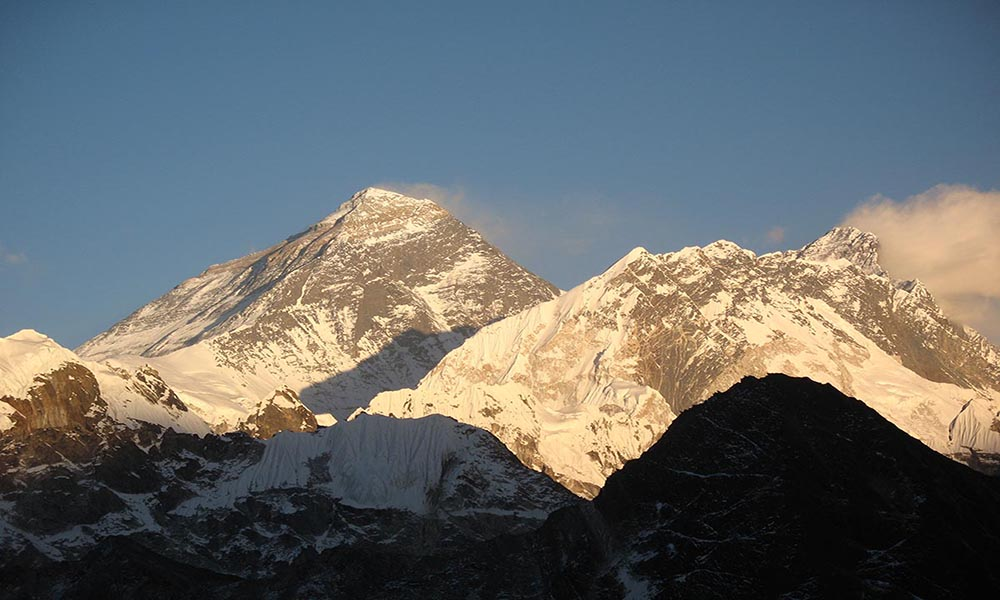
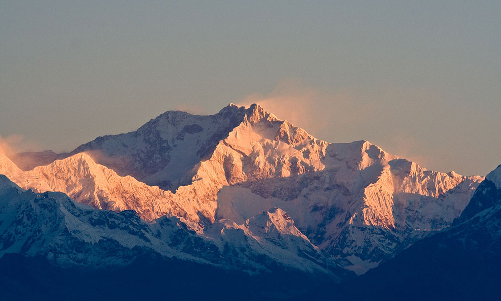
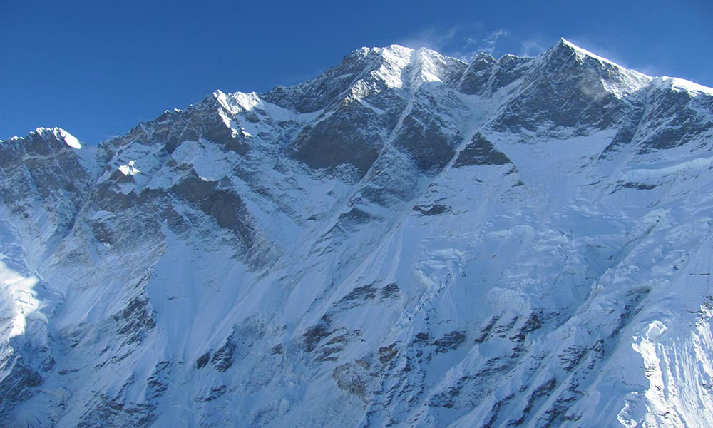
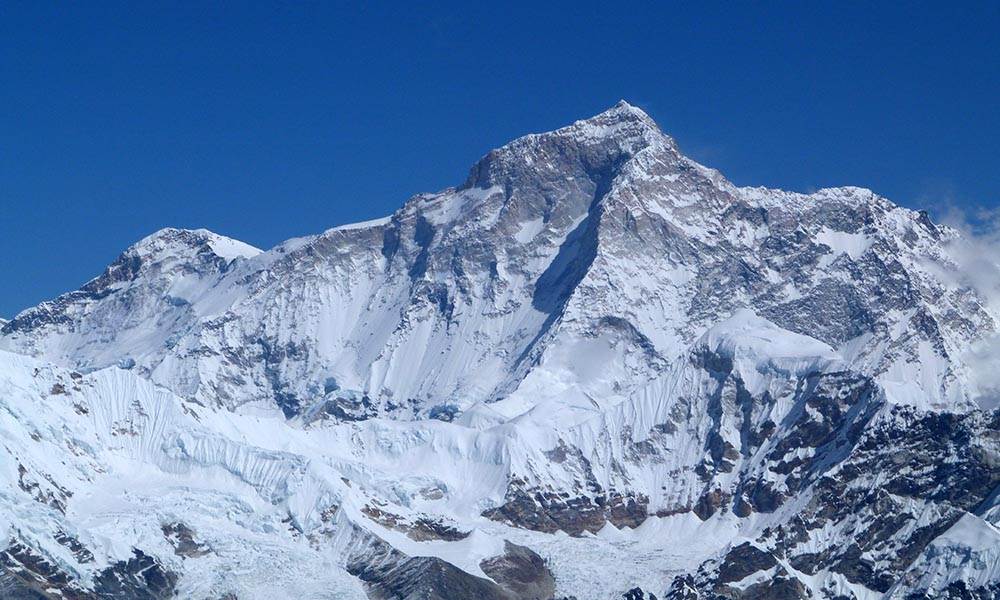
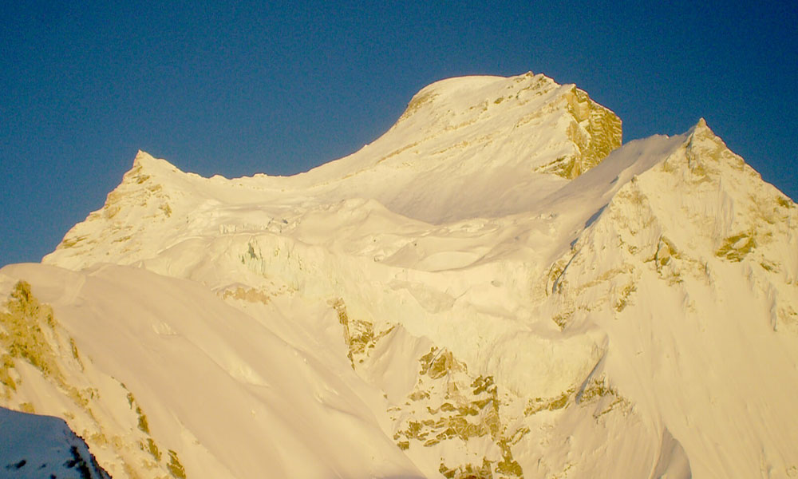
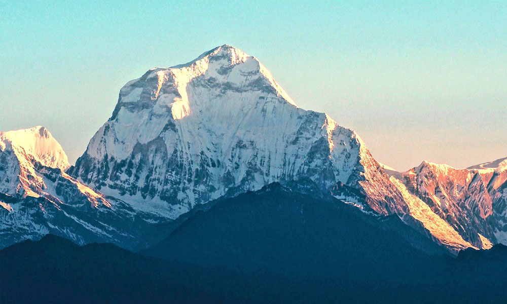
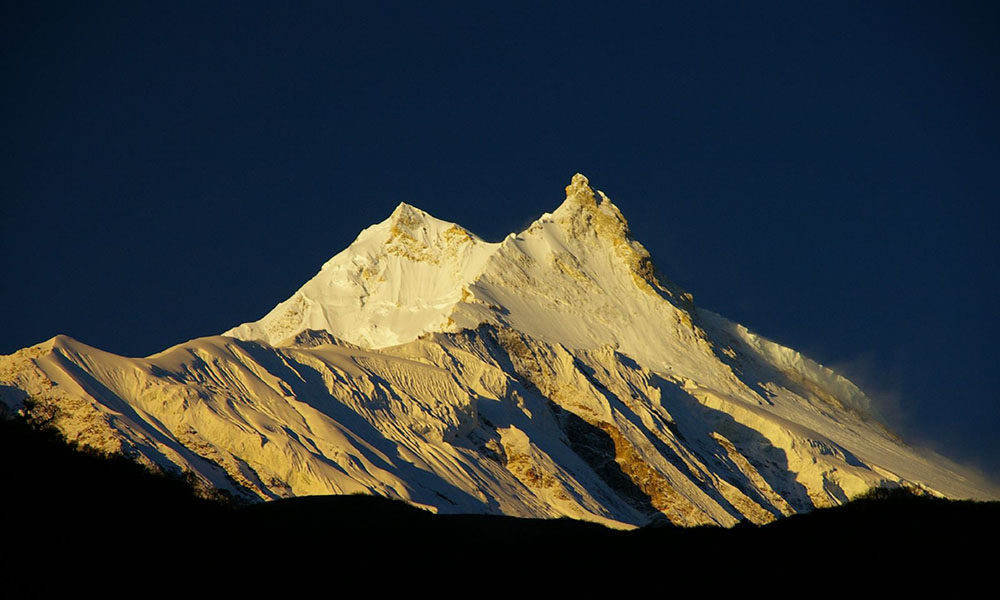
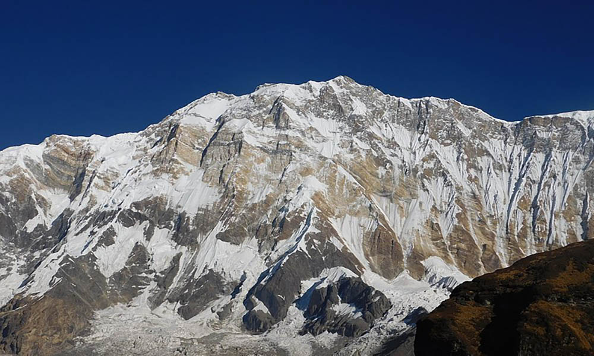

Mountains
Everest
Mt. Everest is the highest peak in the world standing at an elevation of 8,848 m (29,029 ft), recognised by China and Nepal, was established by a 1955 Indian survey and subsequently confirmed by a Chinese survey in 1975. Everest commercial climbs use two major climbing routes (South and North). Everest has the highest number of summiteers out of all the fourteen 8000m peaks in the world. The trek to Everest base camp is also a popular walking holiday with annually more than 35000 people visiting. The trek takes you up to the base camp of the world’s highest mountain.
Kanchenjunga
Kanchenjunga once thought to the highest mountain the world lies in the eastern part of Nepal bordering to India. Kangchenjunga and its satellite peaks form a huge mountain massif which comprises of five highest peaks (Kanchenjunga Main, West, Central, South and Khangbachen). Kanchenjunga is the second-highest mountain in Nepal and third highest mountain in the world.
Lhotse
Lhotse, the third highest mountain in Nepal is part of the Everest massif and is connected to the latter peak via the south col. Lhotse shares the same climbing route as Everest up to Camp 3. In addition to the main summit of Lhotse, the mountain comprises two peaks, Lhotse Middle and Lhotse Shar. Lhotse climbers share the same base camp as Everest climbers and the climbing route is also paired until Camp 3.
Makalu
Makalu is the fourth highest mountain in Nepal and the fifth highest mountain in the world at an elevation of 8,485m/27,838ft. It is considered one of the most difficult eight thousand metres mountain due to its steep pitches and knife-edge ridges. Mr Jean Couzy from France scaled Mt. Makalu first time on May 15, 1955, via west face. Mr Ang Chepal Sherpa was the first Nepali climber to summit Mt Makalu on May 1, 1978.
Cho Oyu
Mt. Cho Oyu, the 6th highest mountain in the world and 5th highest mountain in Nepal remains relatively safest and easiest out of all the 8000m peaks. It is located on the border of Nepal and Tibet, China. It falls on the eastern part of Nepal at Khumbu Region. The North West ridge from Tibet is the most popular climbing route for Cho Oyu. Cho you shares base camp on both sides (Nepal and Tibet, China). Most climbers scale Cho Oyu from north side (Tibet side).
Dhaulagiri
Standing tall at 8167m/26,795ft Dhaulagiri is the sixth highest mountain in Nepal and 7th highest mountain in the world. It lies in the western part of Nepal. The first summit was recorded on May 13, 1960 via Northeast ridge by a joint team of European and Nepali climbers.
Manaslu
The first summit recorded on Mt Manaslu was on May 9, 1956 by a Japenese and Nepali Sherpa climber. Manaslu has recently gained more popularity as a preliminary peak for Everest. Due to the uncertain cancellation of the expeditions on Tibet side by the authorities in the past few years, many have opted for Mt Manaslu as a training 8000m climb for Everest.
Annapurna
Mt. Annapurna was the first 8000m peak to be climbed. On June 3, 1950 Maurice Herzog and Louis Lachenal summitted Manaslu marking the first human feet on 8000m peak. Mt. Annapurna is the most difficult and dangerous peaks out of all the 8000m peaks in Nepal. The exposed ridge, high risk of avalanche etc makes the climb of Annapurna, the deadliest out of the top 10 highest mountains in Nepal.
